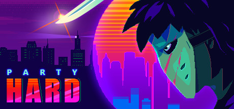
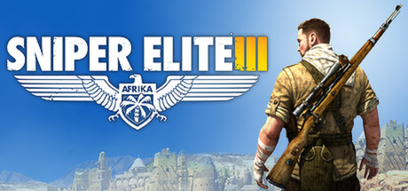
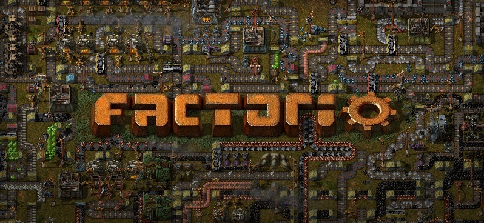
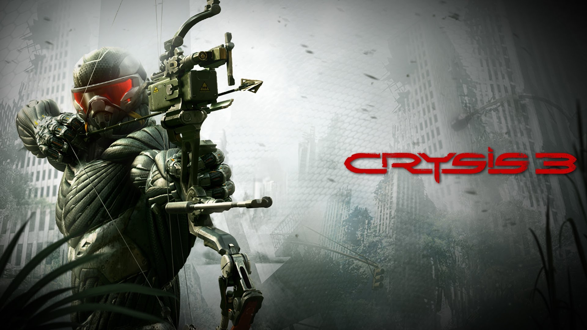
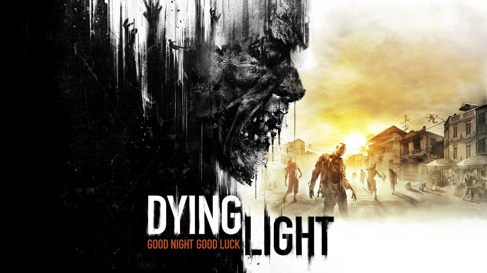

Gry Według Wydajności PC

 ;
;
Call of Duty

Call of Duty to jedna z pierwszych gier tego typu, za sprawą której gracz otrzymuje możliwość spojrzenia na największy konflikt zbrojny XX wieku z kilku różnych perspektyw. Wcielając się w rolę amerykańskiego spadochroniarza, brytyjskiego komandosa lub rosyjskiego piechura ma okazję poczuć klimat tego okresu historycznego - brać udział w wielu ekscytujących bitwach, wykonywać ekstremalnie niebezpieczne zadania specjalne, itp.
Party Hard

Wcielamy się w człowieka, który, poirytowany notorycznymi imprezami i zakłócaniem ciszy nocnej przez swoich sąsiadów, postanawia uporać się z problemem w dość drastyczny sposób. Zamiast kolejny raz wzywać policję, protagonista zamierza dostać się na imprezę i wymordować wszystkich jej uczestników.
Sniper Elite 3

Akcja ponownie osadzona jest w realiach II wojny światowej. Tym razem jednak autorzy porzucili lokacje europejskie i zamiast tego osadzili kampanię na terenach Afryki. Zmianie nie uległa natomiast postać głównego bohatera. Ponownie jest nim Karl Fishburne, czyli strzelec wyborowy pracujący dla dowództwa amerykańskich sił zbrojnych.
Factorio

Factorio to niezależna strategia ekonomiczna, w której zajmujemy się budowaniem fabryk i ich zarządzaniem. Musimy więc troszczyć się o surowce niezbędne do stawiania kolejnych budowli, a także dbać o optymalizację ciągów produkcyjnych, m.in. przez wprowadzenie nowych technologii, wynajdowanych w centrach badawczych czy stałe usprawnianie metod dostarczania towarów do miejsca ich przetwarzania.
Crysis 3

Crysis 3 to trzecia odsłona serii futurystycznych strzelanek, w których gracz przywdziewa zaawansowany technologicznie nanokombinezon. W trzeciej odsłonie serii Crysis przenosimy się do roku 2047 i wcielamy w posiadacza nanokombinezonu Proroka, który staje do walki z obcą rasą Ceph oraz korporacją Cell.
Dying Light

Dying Light to gra akcji z otwartym światem, utrzymana w klimatach survival horroru. Wcielamy się w niejakiego Kyle’a Crane’a, trafiając do miasta Harran, wzorowanego na Rio de Janeiro, pełnym charakterystycznych faweli. Ludność metropolii została zainfekowana tajemniczym wirusem, który błyskawicznie zmienił wszystkich w zombie.
Poznaj najlepasze gry według mnie na pc. Wszystkie prawa zastrzeżone ©